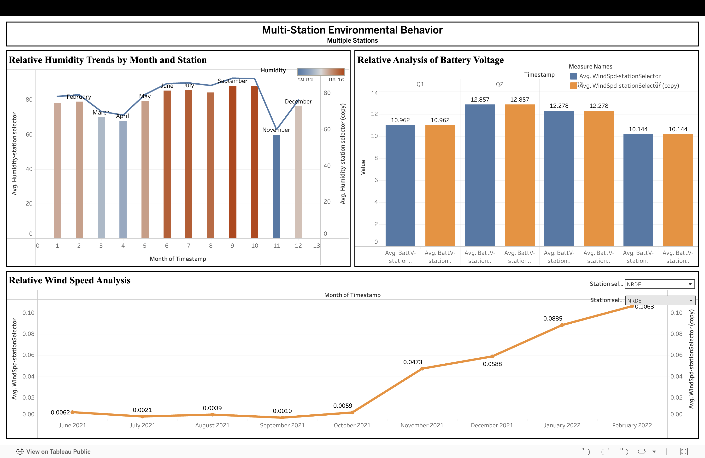
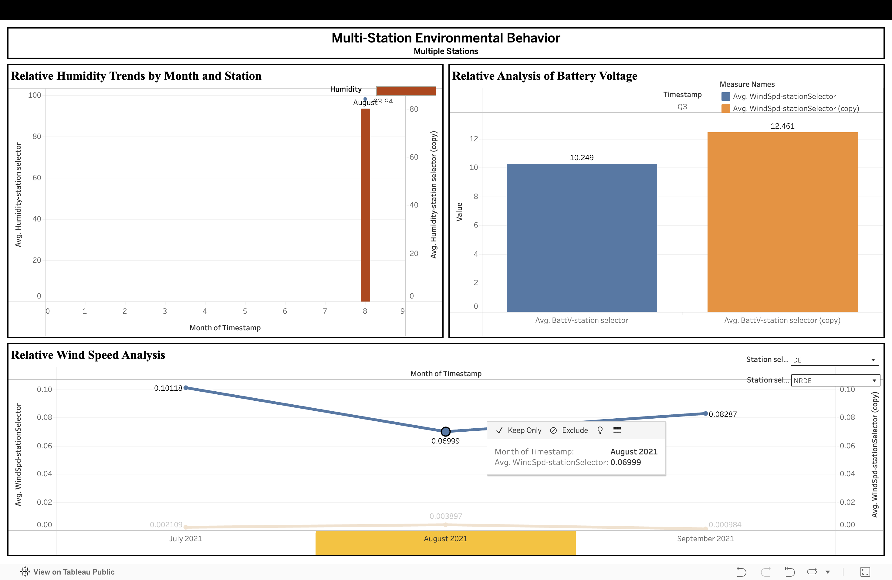

Multistation Environmental Behaviour Analysis
Author: Thaanvi Sudarsan Meda — 801418292
Introduction
This project presents an interactive Tableau dashboard built to analyze and visualize key insights from environmental monitoring data across four stations: DE, DU, NRDE, and SR.
Project Goals
The dashboard analyzes wind speed, relative humidity, and battery voltage across multiple stations. Each view is designed to compare atmospheric and equipment performance differences between locations while enabling dynamic station selection.
Dashboard Tasks and Users
The dashboard supports the following tasks, each important for researchers, faculty, students, and maintenance teams working with station data.
- Relative Humidity Trends by Month and Station — Visualize monthly humidity patterns for two user-selected stations using combined bars and lines. This view highlights moist, dry, and transition periods across stations to reveal microclimate differences.
- Relative Analysis of Battery Voltage — Compare average battery voltage across quarterly intervals for two stations. This identifies low-voltage periods that could threaten sensor reliability and data continuity.
- Relative Wind Speed Analysis — Analyze monthly average wind speed changes for two stations. The dual-line chart reveals seasonal peaks and valleys, helping users understand airflow and local climate behavior.
Task Importance
Each task is designed for the project’s target users:
- Relative humidity is essential for comfort, evaporation, wetness, and fog formation analysis.
- Battery voltage indicates sensor health and data reliability, especially in field conditions.
- Wind speed helps interpret airflow, moisture dispersion, and microclimate differences between site locations.
Target Users
- Redlair climate and hydrology researchers
- Environmental science faculty at UNC Charlotte
- Students analyzing multi-station environmental behavior
- Sensor maintenance teams monitoring battery and climate performance
- Microclimate comparison groups studying DE, DU, NRDE, and SR stations
Meaning of Displayed Values
| Variable | Meaning | Why It Matters |
|---|---|---|
| Avg. Humidity | Monthly mean relative humidity for the selected station. | Shows moisture levels needed for fog, dew, evapotranspiration, and comfort analysis. |
| Avg. BattV (V) | Average battery voltage powering each environmental station. | Indicates equipment reliability and ensures sensors have enough power for accurate readings. |
| Avg. Wind Speed (m/s) | Monthly mean wind speed for each selected station. | Helps interpret airflow, heat loss, moisture movement, and microclimate differences. |
Interactive Station Selection
Station selectors allow users to compare any two stations instantly. The dashboard updates charts dynamically, supporting direct comparison without rebuilding visualizations.
Example Dashboard Screenshots

Station comparison charts showing humidity and battery voltage trends.

Wind and humidity analysis views with interactive station selectors.
Missing Data Handling
Missing values are treated carefully to preserve data integrity:
- Short gaps (minutes to a few hours) are ignored during aggregation.
- Longer gaps (days or weeks) are excluded from monthly averages to avoid bias.
- No imputation is applied; only valid sensor readings are used.